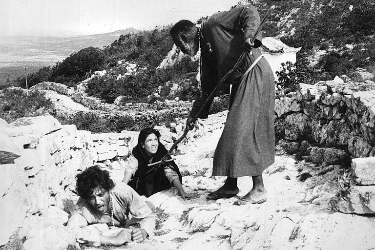

Em Deus e o Diabo na Terra do Sol (1964), o vaqueiro Manuel e sua mulher, Rosa, deixam para trás a exploração de um coronel e seguem, primeiro, um beato e, depois, um cangaceiro, enquanto o matador Antônio das Mortes os persegue pelo sertão. Mais de seis décadas depois, o filme de Glauber Rocha segue sendo estudado, restaurado e citado como referência por cineastas de gerações posteriores.
Para entender o que mantém a obra viva, conversei com Tatiana Baruel, diretora, roteirista e escritora, que coordena um clube de cinema e a produtora Pro Imagem e que dirigiu recentemente um telefilme. Na entrevista, gravada em 31 de outubro de 2026, ela fala como realizadora e espectadora: lê os personagens como arquétipos de classes sociais, enxerga no filme uma tragédia à brasileira, comenta referências estéticas e contrastes de cenário e discute o momento atual do cinema nacional.

Você já viu o filme como espectadora e o discute como realizadora. Por que considera Deus e o Diabo na Terra do Sol um marco do cinema brasileiro?
Acredito que ele é um marco por vários motivos. Em relação à narrativa, o Glauber era um intelectual, transitava entre muitas linguagens e soube trabalhar muito bem com arquétipos. Isso já fica evidente na escolha dos personagens: eles não representam apenas um tipo, representam, muitas vezes, uma classe ou um grupo.
Você fala em arquétipos. Quais grupos sociais cada personagem representa?
Há o coronel, que representaria a elite; o padre, que representa a Igreja; os protagonistas, Manuel e Rosa, em especial o Manuel, que representa o povo; e o cangaceiro, que seria o grupo mais subversivo.
O filme costuma ser descrito como uma tragédia brasileira. Que elementos da tragédia clássica você enxerga nele, e o que o contexto do Nordeste acrescenta a essa leitura?
Ele pegou elementos clássicos da tragédia, como o coro e o sertão, e os transportou para o lugar talvez mais inóspito do Brasil. Eu me lembro de quando era criança, na década de 1980: o Nordeste tinha muita miséria. Era comum ver crianças e adultos desnutridos, gente que morria de fome, em imagens muito chocantes, de pessoas magérrimas, como vemos hoje, infelizmente, em países da África. Isso era comum no Brasil. O Glauber veio desse lugar e sabia que história estava contando e de onde estava contando.
Os personagens do filme não são figuras simples de bem e mal. Como a ambiguidade deles é construída, e que efeito ela tem em quem assiste?
São muito redondos, com exceção de alguns que quase não aparecem. O Antônio das Mortes, por exemplo, é um matador de cangaceiros, mas tem crises de consciência. No começo não sabemos direito quem ele é, e ele vai se revelando. O cangaceiro também tem consciência social e é muito religioso, o que é comum nesse tipo de personagem: sanguinário, mas muito devoto. É o personagem mais lúcido da história. Essa ambiguidade ajuda a gente a se identificar com eles e dá profundidade ao filme.
Manuel e Rosa tentam duas saídas: a fé e o cangaço. O que o filme diz sobre essas tentativas de escapar, e como o título entra nessa leitura?
Para mim, a história mostra o Nordeste como um lugar de expiação. Os personagens tentam escapar primeiro pelo fanatismo religioso, em busca de redenção, e depois pelo cangaço, que também não dá certo; ali se cometiam muitas atrocidades. Por isso eu acho o título uma grande ironia: é um filme sobre expiação, porque eles não têm saída nem solução. Na minha visão, não há nem Deus nem diabo ali, é tudo expiação, tudo fuga.
Do ponto de vista da linguagem, que referências e contrastes o Glauber mobiliza, na montagem, no narrador, na trilha e nos cenários?
Não dá para dissociar o Glauber do momento histórico dele: um artista jovem, nos anos 1960, num momento de ebulição do cinema. Vemos claramente as referências estéticas que ele tinha: elementos do neorrealismo italiano, da Nouvelle Vague e do cinema russo, que ele admirava, e na montagem dá para perceber referências a Eisenstein. Mas ele brinca com essas referências por meio de contrastes. O cordelista, que é o narrador, é também um coro grego: a dramaturgia erudita grega transposta para o ambiente do cordel. Na trilha, ele combina Villa-Lobos e cordel, enquanto os cenários são muito realistas. E há um jogo entre o alto e o baixo: nas cenas com o beato, Manuel está sempre no alto, num cenário grandioso; quando vai para o cangaço, as cenas passam a ser no chão. Ele trabalha com esses opostos e nos faz pensar sobre essas dicotomias, de uma forma muito original e muito brasileira.

Mais de seis décadas depois, por que você acha que o filme continua atual?
Pelos motivos narrativos que citei e porque ele trabalha com arquétipos: sempre vai haver opressores e oprimidos, sempre vai haver desigualdade. Os personagens são reais, pessoas que encontramos no dia a dia, e quem já andou pelo sertão se identifica ainda mais. O Brasil mudou e, acho, melhorou em alguns aspectos, mas ainda nos reconhecemos muito no que o filme mostra.
O filme é considerado uma das obras mais influentes do cinema nacional. Você vê essa influência em produções mais recentes?
Com toda certeza. É um filme seminal do cinema brasileiro e inspirou muitas obras, inclusive Bacurau, uma referência mais recente. A gente sempre bebe dessa fonte: são os nossos grandes mestres.

Se tivesse que destacar um único elemento do filme, qual seria?
O trabalho com arquétipos e a tradução deles para a realidade brasileira, de forma poética e com uma ambiguidade muito grande. Isso me chama muito a atenção. Esses personagens nos ajudam a fazer uma ponte entre o passado e o futuro, porque as classes e os grupos que eles representam sempre vão existir.
Como você enxerga o momento atual do cinema brasileiro, depois da repercussão internacional de filmes como O Agente Secreto?
Pode ser que eu esteja contaminada, por trabalhar com isso, mas vejo um momento positivo. O Agente Secreto concorreu ao Oscar, inclusive em Melhor Filme e Melhor Filme Internacional. Ainda há muito o que caminhar, mas o público brasileiro está com os nossos filmes.
Que recado você deixaria para quem gosta de cinema brasileiro e quer apoiar a produção nacional?
A primeira semana é decisiva para que um filme continue ou não em cartaz. Se você gosta de cinema brasileiro e quer contribuir, vá assistir aos nossos filmes, em especial na primeira semana. Isso nos ajuda muito, porque a concorrência é desproporcional: os filmes americanos têm muito mais dinheiro de distribuição.
Ao longo da conversa, Tatiana Baruel voltou a uma ideia: o que torna Deus e o Diabo na Terra do Sol atual não é só o contexto em que foi feito, mas a capacidade de seus personagens de representar relações que se repetem. A leitura dela une narrativa, estética e experiência pessoal, e termina com um pedido concreto: que o público ocupe as salas nos primeiros dias de cada lançamento nacional. Para quem faz cinema no país, a lembrança de um filme de 1964 e a luta por espaço hoje fazem parte da mesma história.
Para a publicação, o texto foi editado: repetições, vícios de linguagem e interrupções foram suprimidos, trechos sobre o mesmo tema foram reorganizados e as perguntas foram reformuladas para maior clareza, sem alterar o sentido das respostas. A versão final foi lida e aprovada pela entrevistada.